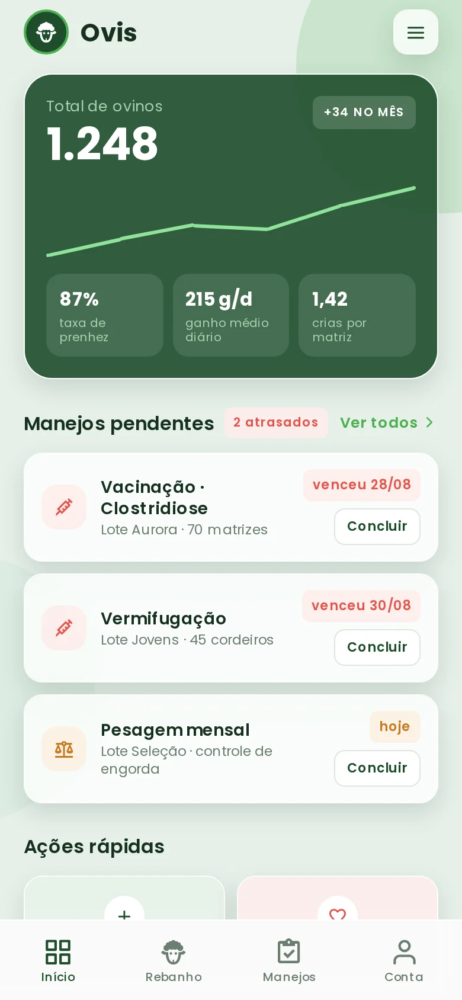
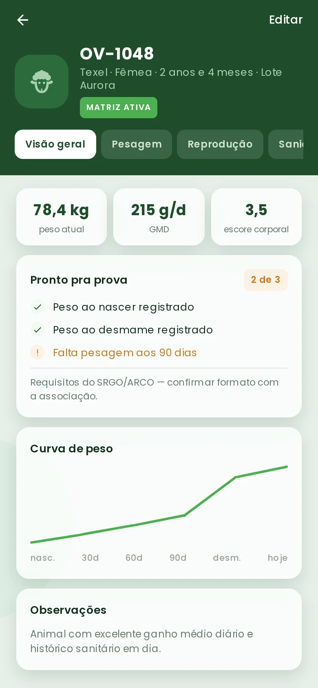

BasicPlano Basic
R$ 259,90/ mês
Encontre a ovelha pelo lote e abra a ficha no celular. Pesagens, sanidade e reprodução ficam junto do animal. Esta prévia usa dados de demonstração.

Na lista do rebanho, a Estrela aparece ao lado dos outros animais do lote. Ao abrir a ficha, você encontra a pesagem, o ganho médio diário e os registros de manejo dela.
Captura do protótipo mobile com dados simulados.

Abra a lista de animais, escolha um lote e consulte a ficha. Na demonstração mobile, você pode explorar pesagens, manejos e reprodução com os animais de exemplo.
Para visualizar movimentações entre lotes, existe também uma prévia separada para desktop ↗. O mapa é esquemático; as alterações ficam neste navegador e não são enviadas ao aplicativo.
Digite a quantidade e compare os preços da tabela enviada pela equipe para Basic, Plus e Pro. Esta simulação não indica um plano ideal nem inicia uma assinatura.
Valores informados na tabela enviada pela equipe Ovis. Simulação de preço, não contratação.
No pagamento anual, o total dos 12 meses tem 15% de desconto.
As faixas de 250 e 500 aparecem com asterisco na tabela original, sem explicação das condições. Aqui são interpretadas como até 250 e até 500 ovinos; confirme a regra comercial antes de contratar. Acima de 500 ovinos, não há preço informado. As diferenças de recursos entre Basic, Plus e Pro ainda não foram fornecidas.
O aplicativo e o mapa usam dados simulados. Não há conta, sincronização entre as prévias ou assinatura ativa neste site. A calculadora acima compara os valores informados pela equipe; não processa pagamentos.